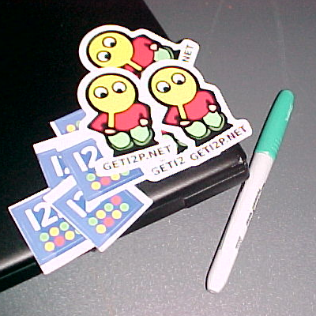

Why Donate To I2P? Stickers!
When you donate to the I2P project, not only are you advancing the cause of online freedom and privacy, but if you add 'stickers please' along with your address you might get stickers for your contribution! In my experience they send more than enough (see image)! As long as your PayPal donation covers the
costs and you ask for them, you're set! If you haven't donated to the I2P project yet, you should really consider it!
You can donate to the official I2P project here. You will need to use PayPal to get the Stickers! See site for details!

Please consider hosting an eepsite of your own if you have a desktop/ VPS that runs 24/7. We always need good content that reflects well on the I2P network and community. #eepGang
|